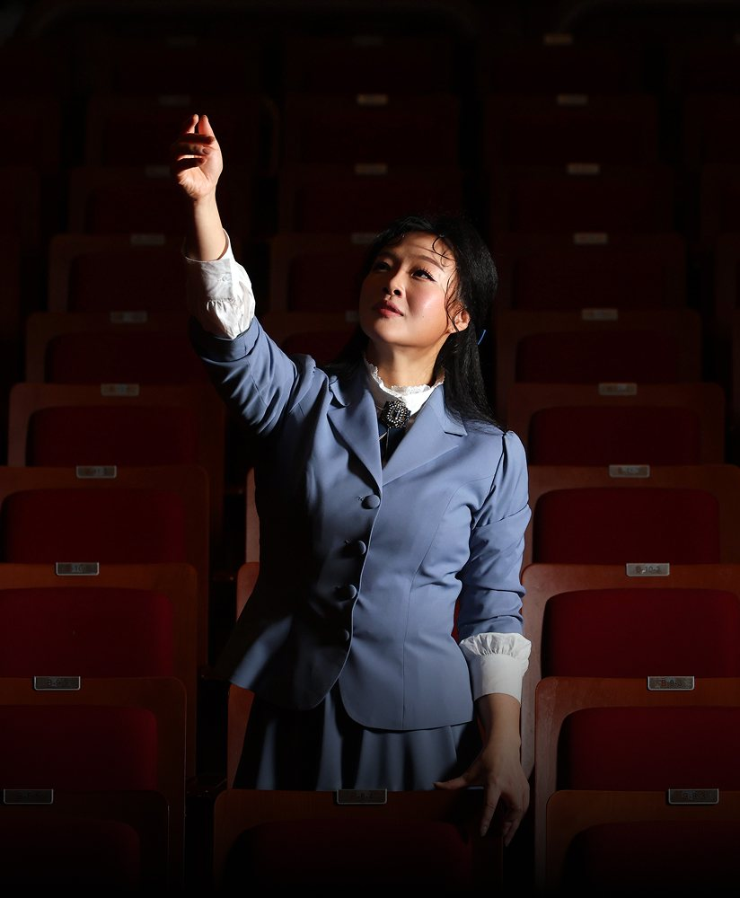
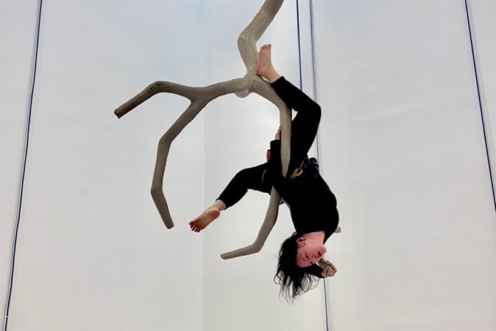
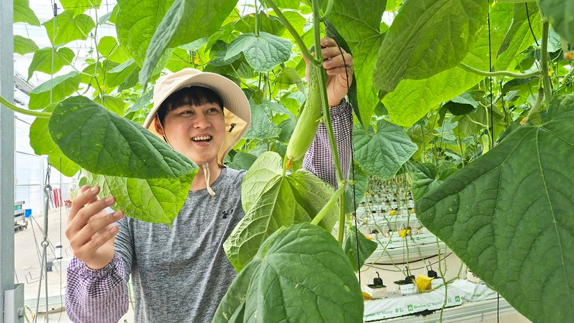
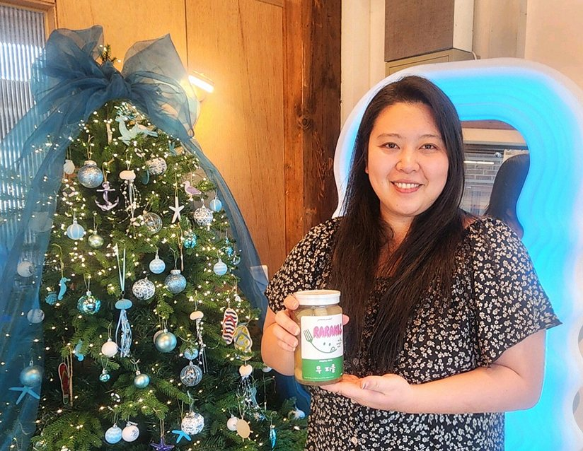
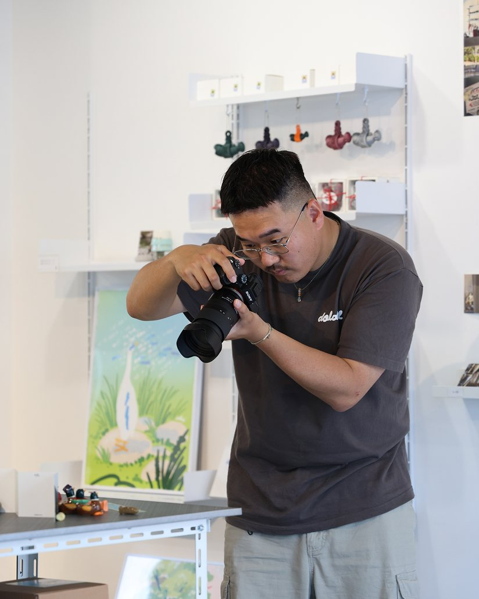

01/ 03
청년정책K-아트 청년 창작자 지원사업
청년 예술창작자 누구나 연간 900만원 (상반기 400만원, 하반기 500만원) 지원
아트누리(artnuri.or.kr) 참조자세히 보기
청년들, 직접 체감한 청년정책을 말하다
연극 배우 이다해 씨가 청주 예술의전당에서 포즈를 취하고 있다.
지난해 10월 충북 청주 예술의전당에서 만난 배우 이다해 씨(34)는 “2027년 1월 1일 실직자가 된다”고 말했다. 충북도립극단 시즌단원으로 3년 계약이 2026년 종료됐다. 하지만 그의 표정은 밝았다. 2027년 그는 1인 창작극을 만들 예정이다. K-아트 청년 창작자 지원사업에 선정돼 지난해에 이어 올해 900만 원을 지원받는다. 그는 “예술인들 스스로 하고 싶은 작품에 대한 계획을 세우고, 국가의 지원을 받으며 이를 추진해 볼 수 있는 기회”라고 했다.
올해로 연기 활동 12년 차. 크고 작은 부상으로 원치 않는 공백기도 부지기수였다. 2020년 그는 공연 연습을 하다 발가락이 골절됐다. 연일 폭우가 쏟아지던 그해 여름, 에어컨이 없어 높은 습도에 들뜬 임시 매트의 잘려나간 이음매에 발이 끼었다. 핀을 박는 수술을 해야 했다.
그는 한국예술인복지재단(www.kawf.kr)을 통해 상해 사고 청구 관련 상담을 받았다. 그 결과 수술비 전액과 요양·휴업급여 등을 지급받았다. 한국예술인복지재단은 이 씨와 같은 예술인의 산재보험 가입 시 정보 부족을 해소하고 행정 처리를 돕기 위해 보험사무를 대행한다. 또 분기별로 납부보험료의 50% 환급을 지원하고 있다. 재단에 따르면 지난해 10월 기준 예술인산재보험(wci.kawf.kr) 누적 가입자는 1만 9014명으로, 올해에만 3859명이 예술인산재보험에 신규 가입했다.
삶의 무게는 저마다 다르다. 나이에 따라, 사는 곳에 따라, 진로에 따라, 부모의 자산에 따라 제각각이다. 정부는 각자에게 알맞은 방식으로 손을 내밀어 그 무게를 덜어준다. 한 아이를 키우는 데 온 마을이 필요하듯, 한 청년이 사회에 첫발을 내딛는 데는 다양한 지원이 필요하다.

전남광주에서 나고 자란 심 모 씨는 스무 살이 되던 해에 건축 현장에서 무게 20㎏짜리 합판을 날랐다. “저처럼 대학 학비는 벌어야 하는데 아무런 기술이 없는 사람이 하는 일이죠. 다음 날 근육통은 당연하고요.” 공사 현장뿐만 아니라 카페, 레스토랑, 백화점, 헬스장 등 아르바이트를 거쳤다. 버팀목이 된 건 한국장학재단(www.kosaf.go.kr)의 국가장학금과 생활비대출이었다. 졸업 전 3학기에는 교내에서 국가근로장학생으로 일했다. 대학생에게 학자금 마련을 위한 근로 기회를 제공하고 그에 따른 대가를 현금 으로 지급하는 제도다. ‘내 공부’를 하기 정말 좋은 기회였다.
올해 30세인 그는 3년간 다니던 제약회사를 그만둔 뒤 재취업을 준비 중이다. 국민취업지원제도를 통해 월 60만 원씩 구직촉진수당 등을 지원받고 있다. 2021년 도입된 국민취업지원제도는 2025년 12월 말까지 163만여 명에게 심층 상담 및 맞춤형 취업지원 서비스를 제공했다. 주거 걱정은 한국토지주택공사(LH) 청년전세임대를 통해 덜었다. 그는 이 제도를 통해 집을 구해 6년째 거주 중이다.
주거난이 심각한 서울의 청년들에게 ‘살 곳’은 더욱 절실하다. 경남 양산에서 태어나 고려대를 졸업한 강윤희 씨(27)는 기숙사 퇴소를 앞두고 고민이 많았다. 학교 앞 오피스텔은 턱없이 비쌌다. 그는 현재 월 18만 원을 내고 서울 강북구 소재 행복주택에 살고 있다. “아르바이트를 해도 월세가 80만 원이면 너무 소모적인 인생이 될 거 같은 거예요. (행복주택 거주가 가능한) 기간이 끝나면 서울에서 어떻게 살 수 있을까 싶어요.”
강 씨는 최근에만 면접을 세 차례 봤다. 면접용 정장을 구입하려면 비용이 적지 않게 들지만, 그는 서울시 취업날개 서비스를 통해 정장과 구두를 빌린다. 연 10회까지 전액 무료다.

한재웅 대표가 경북 상주의 스마트팜 농장에서 수확을 앞둔 오이를 살펴보고 있다.
경북 상주 스마트팜에서 백다다기오이를 기르는 한재웅 씨(34)는 출하량이 많은 날은 하루에 50개들이 상자 100개를 판다. 서울 토박이였던 그가 처음 상주 땅을 밟은 건 26세 때였다. 서울시가 기초자치단체 24곳과 협력해 청년들이 지역에 뿌리내릴 수 있도록 돕는 사업인 ‘넥스트로컬’(seoulnextlocal.co.kr)을 통해서였다.
초기에는 임금을 떼이고 지원금을 뜯기기도 했다. “고작 27세였으니까요. 30세까지는 부딪치며 실패해 보는 것도 괜찮지 않을까 생각했어요.” 그는 농장에서 이주노동자들과 함께 일하며 땅과 흙을 배웠다. 서울시와 상주시 담당자들은 합심해 도움의 손길을 건넸다. 서울시에선 그가 상주시와 소통할 수 있도록 자리를 마련해 줬고, 상주시에선 청년 지원사업이 있으면 “이거 신청했느냐”며 먼저 연락해 왔다. 그는 “그때 저를 도와준 상주시 주임, 팀장님이 어느새 과장, 국장님이 됐다”며 웃었다.

전남광주 강진군 병영군 라라잇 레스토랑에서 임고은 대표가 여주 피클을 들어 보이고 있다.
전남광주 강진군 병영시장에서 레스토랑 ‘라라잇’을 운영 중인 임고은 씨(37)는 한때 밴드 멤버로 음반을 내고 지상파 경연대회에도 두 시즌 출연했다. 예능인으로 생계유지는 쉽지 않았다. 학원강사와 디자인강사로 먼 길을 돌아 넥스트로컬 사업에 지원해 지금의 삶에 이르렀다. 강진군이 국비 5000만~6000만 원을 들여 리모델링한 청년점포는 그의 일터가 됐고, 강진군이 빈집을 고쳐 공급한 월세 1만 원짜리 주택은 보금자리가 됐다. 강진에 내려온 지 3년이 된 지금 레스토랑은 입소문을 타며 현재 예약제로 운영되고 있다. “쳇바퀴 돌듯 하루를 버텼던 삶인데, 이젠 내일을 기다리는 삶으로 바뀌었어요.”
2026년 기준 중앙정부 및 지방자치단체(17개 시도)의 청년정책 시행계획을 전수조사한 결과, 총 1959개 (중앙정부 389개, 지자체 1570개) 사업으로 집계됐다. 다양한 청년정책은 청년들에게 실질적인 지원과 기회를 제공할 뿐만 아니라 ‘노력하면 되는 사회’라는 신뢰를 조성한다. 방송사에서 기술 엔지니어로 일하는 신 모 씨는 “출발선은 (사람마다) 다를 수 있지만 국가에서 해 주는 지원이 찾아보면 매우 많다”며 “본인 의지만 있으면 성공할 수 있는 사회”라고 말했다.
관건은 전달이다. 도움이 필요한 청년들이 정부 및 지자체에서 어떤 청년정책을 펼치는지 알고, 그중 자신에게 알맞은 제도를 이용할 수 있도록 해야 한다. 지난해 8월 이재명 대통령 주재로 청와대에서 열린 ‘청년정책 대전환을 위한 청년정책 전문가 간담회’에서도 정부의 청년정책이 방대한 규모로 이뤄지고 있음에도 청년들의 체감도가 낮다는 지적이 공통적으로 제기됐다.
누리소통망(SNS)은 효과적인 연결 채널로 손꼽힌다. 치위생사 김다현 씨(가명)는 “청년미래적금 같은 정책 정보를 인스타그램만 해도 알아서 알려줘 SNS가 도움이 된다”고 말했다. 중견 여행사에서 일하는 박지민 씨는 “(국민취업지원제도) 구직촉진수당을 엑스(X)에서 보고 신청했다. 금전적으로 도움이 됐다”고 말했다.

돌고돌아성북천 대표 조정묵 씨가 사진을 찍고 있다.
인스타그램으로 접한 정보가 진로 변경에 결정적 계기가 된 사례도 있다. 돌고돌아성북천 대표 조정묵 씨(29)는 마케터로 일하다 지난해 퇴사 후 창업을 했다. 로컬브랜드 상권 지역가치창업가(로컬인서울) 사업 참가자로 선정돼 받은 3000만 원이 그에게 ‘비빌 언덕’이 됐다.
“사실 엄청난 확신을 가지고 (창업을) 했던 것은 아니에요. 지원금 3000만 원으로 ‘당장 먹고살 수는 있겠다’ 싶었어요. 한번 도전해 보자 싶었습니다.” 그는 이 사업을 로컬인서울 인스타그램 공식 계정 (@localinseoul/)의 게시글을 통해 알게 됐다.
청년정책은 청년들이 오늘과는 다른 내일을 꿈꾸게 한다. 더 나은 내일에 대한 희망을 꺾지 않은 청년들은 더 나은 국가를 만드는 사회구성원으로 성장한다. 국민취업지원제도를 통해 받은 수당을 면접 교통·숙박비로 쓴 정의석 씨는 반도체 대기업 생산설비에서 근무 중이고, 국가장학금을 받은 손병우 씨는 방산기업 생산 현장에서 인턴으로 일하고 있다.
청년정책은 오늘을 버티게 하는 최후의 안전망이 되기도 했다. 범죄 피해 뒤 트라우마를 겪던 유다희 씨는 국가 지원으로 심리상담을 받았고, 현재 종교 상품을 판매하는 회사에서 디자이너로 일하고 있다. 5년 넘는 은둔 생활과 아버지의 언어폭력으로 우울증을 겪은 박예솔 씨(가명)는 청년센터에서 심리상담과 함께 관련 프로그램도 지원받았다. 그는 “덕분에 27세 무렵 처음 사회에 발을 내디뎠고, 이 과정에서 좋은 사람을 만나 결혼도 하게 됐다”고 했다.
청년 예술창작자 누구나 연간 900만원 (상반기 400만원, 하반기 500만원) 지원
아트누리(artnuri.or.kr) 참조자세히 보기무주택자인 청년(혼인 중 제외) LH가 기존주택을 전세 계약해 저렴하게 재임대
LH청약플러스 (apply.lh.or.kr) 참조자세히 보기청년 누구나(올해 소득 기준 폐지) 자유적립식 적금, 정부 기여금 및 비과세 혜택 제공
서민금융진흥원(kinfa.or.kr) 참조자세히 보기